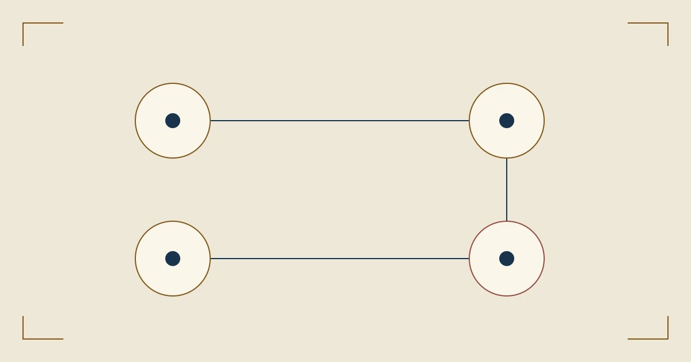

%%A6_EYEBROW%%
%%A6_TITLE%%
%%A6_INTRO%%
本图导航
%%A6_H2_1%%
%%A6_BODY_1%%
- 01
%%A6_TRANSIT_LABEL_1%%
%%A6_TRANSIT_TITLE_1%%
%%A6_TRANSIT_TEXT_1%%
- 02
%%A6_TRANSIT_LABEL_2%%
%%A6_TRANSIT_TITLE_2%%
%%A6_TRANSIT_TEXT_2%%
- 03
%%A6_TRANSIT_LABEL_3%%
%%A6_TRANSIT_TITLE_3%%
%%A6_TRANSIT_TEXT_3%%
- 04
%%A6_TRANSIT_LABEL_4%%
%%A6_TRANSIT_TITLE_4%%
%%A6_TRANSIT_TEXT_4%%
%%A6_H2_2%%
%%A6_BODY_2%%
%%A6_QUOTE_TEXT%%
%%A6_H2_3%%
%%A6_BODY_3%%
- %%A6_POINT_1%%
- %%A6_POINT_2%%
- %%A6_POINT_3%%
%%A6_H2_4%%
%%A6_BODY_4%%
%%A6_CLOSING_TEXT%%
%%A6_FAQ_TITLE%%
%%A6_FAQ_Q1%%
%%A6_FAQ_A1%%
%%A6_FAQ_Q2%%
%%A6_FAQ_A2%%
%%A6_FAQ_Q3%%
%%A6_FAQ_A3%%